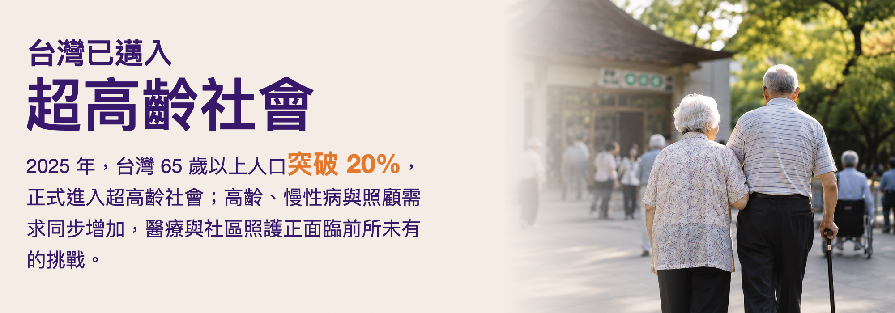
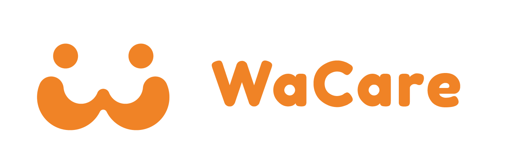
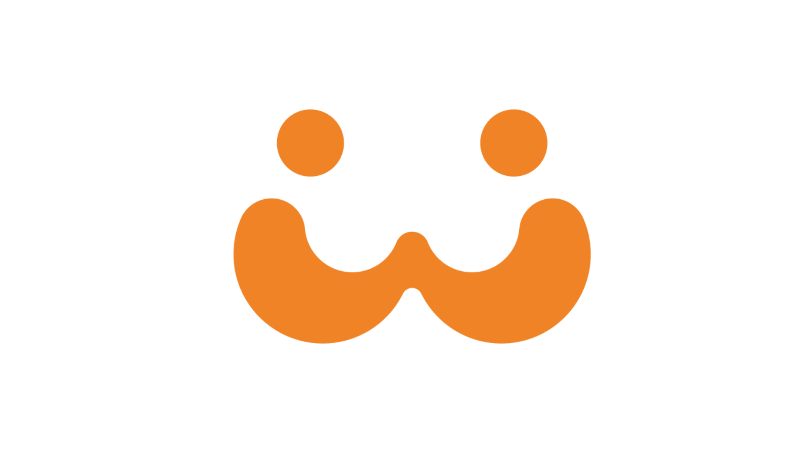
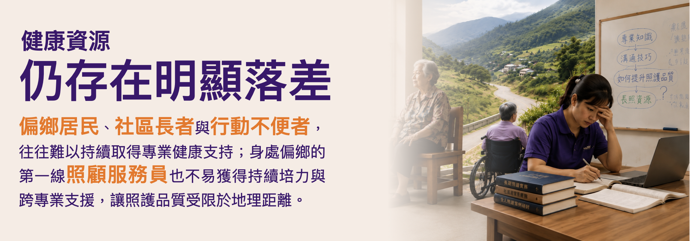
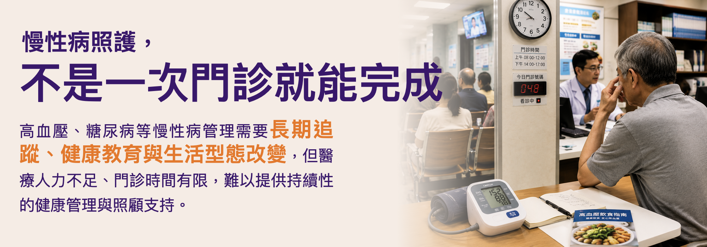

數位健康社群讓科技成為縮短健康落差的力量
WaCare 以科技串連民眾、照顧者、醫療專業與在地社區， 讓健康支持突破時間與距離，真正走進每一天的生活。
信仰
科技助人・數位人道
科技不只是提升效率的工具，更應該成為改善照護可近性的力量。
願景
消滅健康不平等
不論身處都市、偏鄉或家中，每一個人都應該享有公平且可近的健康照護資源。
使命
數位共生 Digital Symbiosis
任何時間、任何地點，隨時解決醫療照護問題。

OUR IMPACT
全台最具社會影響力的數位健康社群
自 2016 年成立以來，WaCare 已逐步發展成串連社區、 醫療專業、企業 ESG 與政府的數位健康平台， 讓健康照護突破時間與距離的限制。
0+
服務民眾
0+
服務社區據點
0+
醫療健康專家
0+
健康照護問答
我們將醫療照護體系的每一員，從線下拉到線上，
透過 AI 科技串連每一位需要照護的人、
每一個家庭、每一位專業工作者，以及每一個社區。
THE CHALLENGES
我們正在解決
我們正在解決
什麼問題？
讓照護不再因距離或時間而中斷


HOW WE DO IT
我們如何實踐這個願景？
「把醫療照護，從線下搬到線上。」
WaCare 運用數位平台，串連醫師、護理師、營養師、心理師、 藥師、運動專家等跨專業醫療照護團隊，突破時間與地理限制， 將專業服務延伸至偏鄉社區、居家長者與照顧者， 讓更多人在需要的時候，都能即時獲得支持。
01
社區遠距健康促進服務
結合企業 ESG 行動，將數位初級照護服務帶進全台偏鄉與社區據點。
02
遠距健康照護課程
遠距健康照護課程
（數位社會處方）
由橫跨 21 種職業種類的醫療健康專家開設線上課程， 除了提供失智症照顧者、早療家庭與專業照顧服務員線上培力， 也打造「數位社會處方」模式，協助每個人與偏鄉社區長輩 建立健康生活型態。
03
AI 數位醫療照護工具
運用 AI 與數據科技，結合多樣化的個人健康資訊與醫學指引， 提供疾病 AI 衛教與線上專家諮詢服務， 提升健康管理與照護效率。
OUR ACHIEVEMENTS
我們的成就
從國際合作、永續獎項到數位健康創新，WaCare 持續讓影響力被看見。
GOOGLE × 健保署
與 Google、健保署合作糖尿病數位工具
參與 AI 與數位健康應用場景，推動建構於健康存摺內的服務。
國家級永續行動肯定
2024 行政院國家永續發展獎
以數位健康與社區服務模式，回應健康平權與永續發展。

TSAA
2025 台灣永續行動獎 SDG03 銀級
數位血壓照護網絡獲得肯定。
APICTA 2025
2025 亞太資通訊科技聯盟大賽亞軍
數位健康創新成果獲亞洲太平洋地區肯定。
MEDIA HIGHLIGHTS
媒體報導與公共影響力
從深度專訪、Podcast 到新聞專題， WaCare 持續讓數位健康、偏鄉照護與健康平權議題被更多人看見。
WATCH OUR STORIES
看見科技如何走進真實照護現場
▶
Google Check Up
請在 js/main.js 填入 YouTube 影片 ID
▶
WaCare × 數位人道協會
請在 js/main.js 填入 YouTube 影片 ID
和我們一起，
用科技消滅健康不平等。
如果你相信，科技可以創造真正的社會影響力， 歡迎加入 WaCare，與我們一起打造更公平、更可近的健康照護， 讓每一個人都能在需要的時候，獲得即時且有溫度的支持。
探索 WaCare 職涯機會